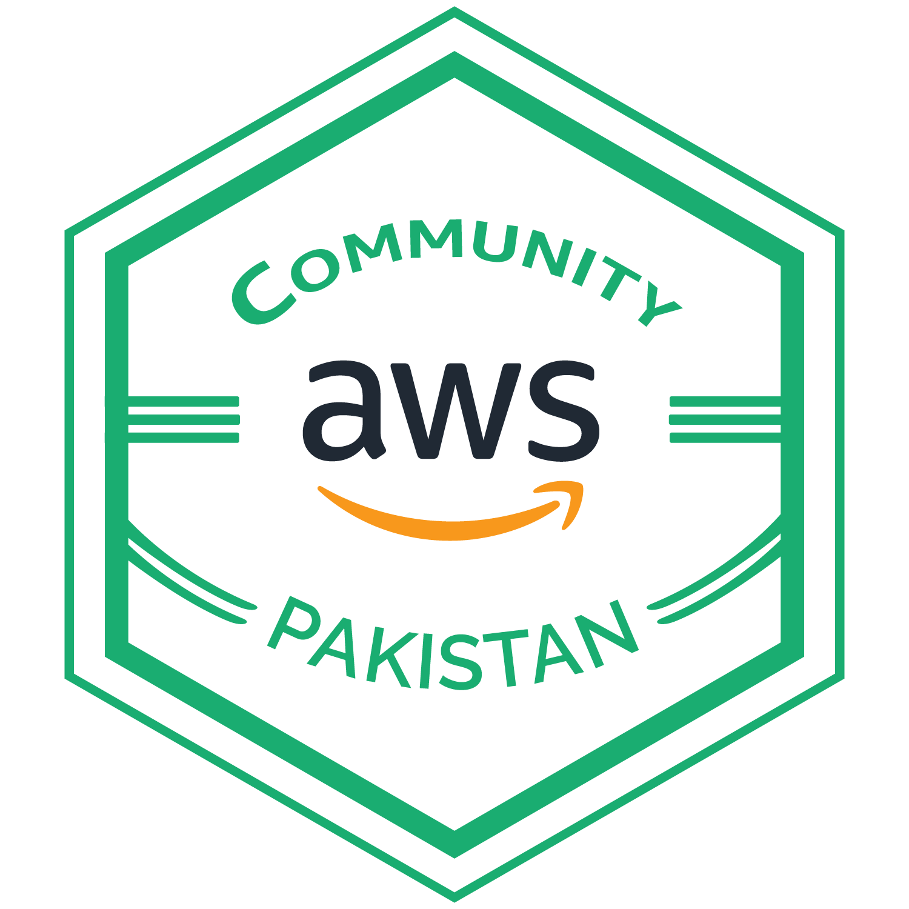

AWS Community Pakistan
Explore the power of AWS technologies and cloud innovations across Pakistan!
AWS Community Day Karachi
AWS User Group Karachi is back to host the most awaited event, AWS Community Day Karachi 2025, unveiling success stories, use cases & much more from industry leaders.
📅 Date: 22th Feb, 2025 (Saturday)
📍 Location: MAJU, Karachi
● Registration Open-ai.png)
AWS Community Day Lahore
AWS User Group Lahore is back to host the most awaited event, AWS Community Day Lahore 2024, unveiling success stories, use cases & much more from industry leaders.
📅 Date: 25th Feb, 2024 (Sunday)
📍 Location: FAST Nuces(Main Auditorium), Lahore
AWS Community Day Islamabad
Join us on August 24th, 2024, for an unforgettable day of all things AWS! Get ready for a day filled with insights, learning, networking, and excitement!
📅 Date: 24th August 2024, Saturday
📍 Location: National Incubation Centre, Islamabad